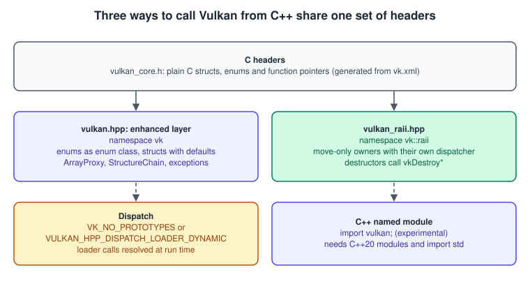
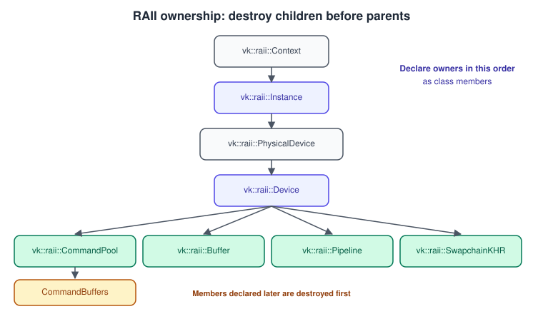
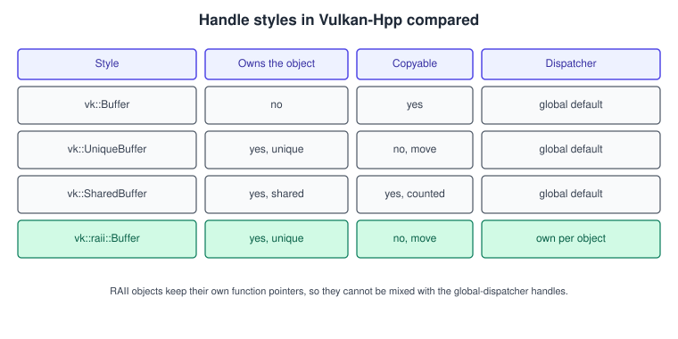
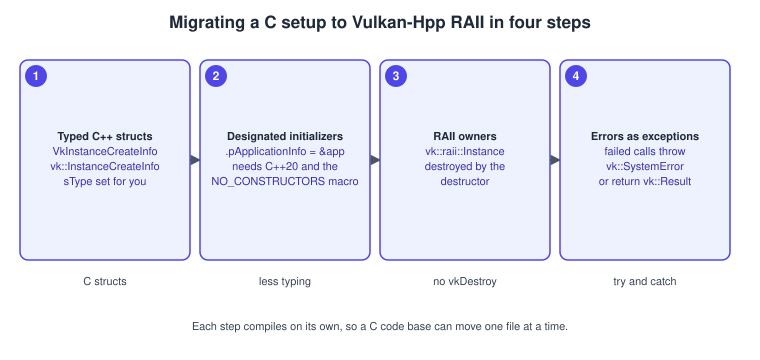

Vulkan-Hpp, RAII and C++ Bindings
|
This content was generated with the assistance of AI and should be verified against the official documentation before being relied on in production. |
The Vulkan API is defined in C. Its structures need an sType and a pNext, every handle must be destroyed by hand in the right order,
and every call returns a VkResult that is easy to ignore. C++ can remove most of that boilerplate without hiding what the API does,
which is why the Khronos Vulkan Tutorial and this section’s running example use Vulkan-Hpp, the official C++ bindings, with its RAII
layer. This page explains what the bindings add on top of the C headers, how the RAII handles own their objects and in which order they
must be destroyed, how functions are loaded and how errors are reported, and how the bindings relate to the C API, to volk, to C++20
modules and to bindings for other languages.
The general concepts behind this page are in Explicit vs Implicit Graphics APIs.
The facts were checked in November 2026. The version documented is Vulkan-Hpp as shipped with the Vulkan 1.4 headers (1.4.3xx; the
release notes mentioned below span v1.4.324 to v1.4.357) and the LunarG SDK 1.4.363.0; the headers vulkan/vulkan.hpp and
vulkan/vulkan_raii.hpp are installed with the Vulkan headers. The code is C++20 and works on every platform Vulkan supports; the C++ named module needs a
recent compiler (see below). This page belongs to the Vulkan Bookshelf running example (C++20, Vulkan-Hpp RAII, VMA, GLFW or SDL3, Slang
shaders) and shows the foundations that the step pages reuse, in particular
Bookshelf 01: Triangle to Textured Book. The C++ language
features it relies on are covered in
Memory Management and Smart Pointers (RAII and ownership),
Error Handling (exceptions),
Namespaces, Modules, and the Preprocessor (modules and
macros) and Build and Tooling (CMake).
Three layers over one set of headers

| Layer | What it is | When to use it |
|---|---|---|
C API ( |
Plain structs, enums and function pointers. Nothing is hidden; every call is explicit. |
C code bases, other-language bindings, or when a library such as VMA only speaks C. Hand-written function loading as in the older books is replaced by volk or by a dispatcher. |
Vulkan-Hpp enhanced mode ( |
Header-only bindings generated from the Vulkan XML registry: type-safe enumerations and bit-fields, structs with default |
A thin layer when you want to keep C-like control, or mix with C libraries. |
RAII ( |
Classes that acquire the C handle in the constructor and release it in the destructor, each with its own dispatcher. |
The default for new C++ code, including this section’s Bookshelf. Available unless |
Every Vulkan 1.4 type and function exists in all three layers, since the bindings are generated from the same registry as the C headers.
That is why the examples in other pages of this section can be translated line by line: a call named
vkCmdBeginRendering(cmd, &info) in C is commandBuffer.beginRendering(info) in Vulkan-Hpp, with the vk, Cmd and handle prefixes
dropped and names in camelCase.
What the enhanced mode changes
| Feature | C | Vulkan-Hpp |
|---|---|---|
Enumerations |
|
|
Bit flags |
|
|
Structure type and chain |
|
|
Counts and arrays |
|
|
Return values |
|
The value is returned. Failure is an exception derived from |
Enumeration calls |
Call twice (count, then fill) |
Wrapper functions return a |
Structure initialisation |
C designated initializers (C99) |
C++20 designated initializers once the generated constructors are removed with |
Release notes show that the bindings keep evolving in small ways: v1.4.324 changed the return type of
vk::raii::Device::acquireNextImage2KHR and vk::raii::SwapchainKHR::acquireNextImage from std::pair<vk::Result, uint32_t> to
vk::ResultValue<uint32_t>; v1.4.351 changed several C-array parameters (for example setBlendConstants and
setFragmentShadingRateKHR) to std::array; and v1.4.357 made the vkGetDeviceProcAddr argument mandatory in the device-level
dispatcher initialisation call that takes explicit arguments. Code written against older bindings, including older tutorials, may need
those small edits.
A side-by-side example
The same instance creation in C and in Vulkan-Hpp RAII:
// C
VkApplicationInfo app = { .sType = VK_STRUCTURE_TYPE_APPLICATION_INFO,
.pApplicationName = "Bookshelf",
.apiVersion = VK_API_VERSION_1_3 };
VkInstanceCreateInfo ci = { .sType = VK_STRUCTURE_TYPE_INSTANCE_CREATE_INFO,
.pApplicationInfo = &app,
.enabledExtensionCount = extCount,
.ppEnabledExtensionNames = exts };
VkInstance instance = VK_NULL_HANDLE;
if (vkCreateInstance(&ci, nullptr, &instance) != VK_SUCCESS) { /* handle */ }
// ... later, after every child object is destroyed:
vkDestroyInstance(instance, nullptr);
// Vulkan-Hpp RAII (requires VULKAN_HPP_NO_CONSTRUCTORS for designated initializers)
constexpr vk::ApplicationInfo app{ .pApplicationName = "Bookshelf",
.apiVersion = vk::ApiVersion13 };
vk::raii::Context context;
vk::raii::Instance instance( context, vk::InstanceCreateInfo{
.pApplicationInfo = &app,
.enabledExtensionCount = extCount,
.ppEnabledExtensionNames = exts } );
// destroyed when `instance` goes out of scopeSource: Vulkan Tutorial: Instance
The tutorial uses vk::ApiVersion14 as its baseline because some older functionality does not work well with the RAII bindings; the
Bookshelf requests 1.3 as its minimum and enables 1.4 features when the device offers them (see
Instance, Loader and Layers for how the requested API version interacts
with the loader).
Configuration macros
Behaviour is selected with preprocessor macros defined before the first include, or, better, in the build system for the whole target so that every translation unit agrees.
| Macro | Effect |
|---|---|
|
Non-success results do not throw. With C++23 and RAII, constructors are unavailable and creation functions return |
|
Removes the generated constructors of structs and unions, which enables C++20 designated initializers. |
|
Removes the chainable setter functions so members change only by assignment. |
|
With the value |
|
Set the dispatcher used when none is passed; set both together. |
|
Defined in exactly one source file to hold the default dynamic dispatcher. The C++ named module stores the dispatcher itself, so the macro is not needed there. |
|
Treats |
|
Remove |
|
Replace the standard assertion used by the bindings, or only the assertions that check result codes. |
|
Turns off the enhanced functions, |
A CMake target that sets the Bookshelf’s choices once:
find_package(Vulkan REQUIRED)
add_executable(bookshelf src/main.cpp src/renderer.cpp)
target_compile_features(bookshelf PRIVATE cxx_std_20)
target_link_libraries(bookshelf PRIVATE Vulkan::Vulkan)
# Dynamic loading: the executable does not link against the loader's import library directly.
target_compile_definitions(bookshelf PRIVATE
VULKAN_HPP_NO_CONSTRUCTORS # C++20 designated initializers
VULKAN_HPP_HANDLE_ERROR_OUT_OF_DATE_AS_SUCCESS)Source: Vulkan-Hpp: Configuration
Structure chains and feature structs
Many setup calls pass a chain of structures through pNext: the device creation call takes feature structures, and queries fill them.
vk::StructureChain<A, B, C> stores the structures contiguously, sets sType and the pNext links for you, rejects at compile time
a structure that may not extend the first one, and gives access through get<T>(). unlink<T>() and relink<T>() remove and restore a
link without changing the memory layout.
#include <vulkan/vulkan_raii.hpp>
#include <algorithm>
#include <stdexcept>
#include <vector>
struct Gpu {
vk::raii::Device device = nullptr;
vk::raii::Queue queue = nullptr;
uint32_t family = 0;
};
Gpu createDevice(vk::raii::PhysicalDevice const& physical,
std::vector<char const*> const& deviceExtensions)
{
auto families = physical.getQueueFamilyProperties();
auto it = std::ranges::find_if(families, [](auto const& f) {
return static_cast<bool>(f.queueFlags & vk::QueueFlagBits::eGraphics);
});
if (it == families.end()) throw std::runtime_error("no graphics queue family");
uint32_t family = static_cast<uint32_t>(std::distance(families.begin(), it));
float priority = 1.0f;
vk::DeviceQueueCreateInfo queueInfo{ .queueFamilyIndex = family,
.queueCount = 1,
.pQueuePriorities = &priority };
// The chain builds the pNext links; the Vulkan 1.3 features are core since 1.3.
vk::StructureChain<vk::DeviceCreateInfo,
vk::PhysicalDeviceVulkan13Features> chain{
{ .queueCreateInfoCount = 1,
.pQueueCreateInfos = &queueInfo,
.enabledExtensionCount = static_cast<uint32_t>(deviceExtensions.size()),
.ppEnabledExtensionNames = deviceExtensions.data() },
{ .synchronization2 = vk::True,
.dynamicRendering = vk::True } };
Gpu gpu;
gpu.device = vk::raii::Device(physical, chain.get<vk::DeviceCreateInfo>());
gpu.queue = vk::raii::Queue(gpu.device, family, 0);
gpu.family = family;
return gpu;
}The default-constructed = nullptr members are valid, empty RAII objects; they let a class hold handles that are created later in the
constructor body or in an init() function. Move-assigning a created object into such a member is the usual way to fill it.
RAII handles and ownership
A vk::raii object acquires its C handle in the constructor and releases it in the destructor. It keeps the dispatcher for its device
(or instance), so member function calls go straight to device-specific function pointers; this is also why it helps programs with more than one
device. The objects that own destructible resources are move-only (they can be moved but not copied); vk::raii::PhysicalDevice is the
exception, because it owns nothing and may be copied.

The construction chain follows the object hierarchy of the C API:
vk::raii::Context context; // function pointers for global commands
vk::raii::Instance instance( context, instanceCreateInfo );
vk::raii::PhysicalDevices physicalDevices( instance ); // a std::vector of vk::raii::PhysicalDevice
vk::raii::Device device( physicalDevices[0], deviceCreateInfo );
vk::raii::CommandPool pool( device, poolCreateInfo );
vk::raii::CommandBuffers buffers( device, allocateInfo ); // a std::vector of vk::raii::CommandBufferRules that the destruction order imposes (and that validation reports when broken, see Validation and Debug Utils):
-
Members of a class are destroyed in reverse order of declaration, so declare owners in dependency order: context, instance, debug messenger, surface, device, then pools, buffers, pipelines and the swapchain. A member declared after the device cannot outlive it.
-
Destroy every
vk::raii::CommandBufferallocated from a pool before thevk::raii::CommandPool. Destroying the pool does not free its buffers automatically in this model. -
Destroying individual descriptor sets is only allowed when the pool was created with
vk::DescriptorPoolCreateFlagBits::eFreeDescriptorSet. -
swapchain.getImages()returns the images the swapchain owns. They are plain handles, not RAII objects, and must not be destroyed; wrap them invk::raii::ImageViewobjects instead. -
A
vk::raiiobject cannot be copied; to take one element out ofvk::raii::CommandBuffers, move it:vk::raii::CommandBuffer cb( std::move( buffers[0] ) ). -
The dereference operator gives the plain handle where a C-style struct needs one:
allocateInfo.commandPool = *pool, orcommandBuffer.bindPipeline( vk::PipelineBindPoint::eGraphics, *graphicsPipeline ).
Unique, shared and raw handles

vk::raii is one of three options in Vulkan-Hpp for automatic resource management, next to vk::UniqueHandle (a unique pointer-like
owner, removed by VULKAN_HPP_NO_SMART_HANDLE) and vk::SharedHandle (reference counted). Unique and shared handles use the global
dispatcher; vk::raii objects carry their own, so the two families are not interchangeable and a function taking a vk::Buffer receives the plain
handle out of a RAII object with *buffer.
The Bookshelf uses vk::raii for everything created from the Vulkan API, and wraps VMA allocations (a C API with its own handle types)
in small classes of its own.
Dispatching: how functions are found
The Vulkan loader exports only a few functions directly; the rest are found with vkGetInstanceProcAddr and vkGetDeviceProcAddr
(see Instance, Loader and Layers). The older Vulkan Cookbook (VCB) loads
every function by hand; today there are three solutions:
| Approach | How it works |
|---|---|
|
The |
Vulkan-Hpp dynamic dispatcher |
Define |
volk |
A separate C meta-loader that fills a table of function pointers; use it with C code or when a library such as VMA needs the same pointers. |
#define VULKAN_HPP_DISPATCH_LOADER_DYNAMIC 1
#include <vulkan/vulkan.hpp>
VULKAN_HPP_DEFAULT_DISPATCH_LOADER_DYNAMIC_STORAGE // once, in one .cpp file
int main()
{
vk::detail::DynamicLoader loader; // keep alive until the last Vulkan call
VULKAN_HPP_DEFAULT_DISPATCHER.init(); // global commands
vk::Instance instance = vk::createInstance( vk::InstanceCreateInfo{} );
VULKAN_HPP_DEFAULT_DISPATCHER.init( instance ); // instance-level commands
// ... pick a physical device, create the device ...
// VULKAN_HPP_DEFAULT_DISPATCHER.init( device ); // optional device-level commands
instance.destroy();
}Errors and results
In the default configuration a call that returns a failure code throws an exception that derives from vk::SystemError; success codes
such as eSuboptimalKHR do not throw. Constructors of RAII objects can also throw. That is the most readable style, and the one the
Bookshelf uses, with a single try in main that prints the message and exits.
Two places need explicit result handling even then.
-
Swapchain acquire and present.
VK_ERROR_OUT_OF_DATE_KHRis a normal event on a window resize. Either defineVULKAN_HPP_HANDLE_ERROR_OUT_OF_DATE_AS_SUCCESSand test the returnedvk::Result, or catch the exception thrown for out-of-date. See Window System Integration and the Swapchain for the full recreate sequence. -
Device loss and out of memory. These are not recoverable by retrying; see Debugging and Capture Tools for crash diagnostics.
// With VULKAN_HPP_HANDLE_ERROR_OUT_OF_DATE_AS_SUCCESS defined:
auto [result, imageIndex] = swapchain.acquireNextImage( UINT64_MAX, *imageAvailable, nullptr );
if ( result == vk::Result::eErrorOutOfDateKHR ) {
recreateSwapchain();
return;
}
// ... record and submit ...
vk::PresentInfoKHR present{ .waitSemaphoreCount = 1,
.pWaitSemaphores = &*renderFinished,
.swapchainCount = 1,
.pSwapchains = &*swapchain,
.pImageIndices = &imageIndex };
result = queue.presentKHR( present );
if ( result == vk::Result::eErrorOutOfDateKHR || result == vk::Result::eSuboptimalKHR ) {
recreateSwapchain();
}When exceptions are not allowed (some game studios and embedded targets forbid them), define VULKAN_HPP_NO_EXCEPTIONS. Without
C++23, calls return vk::ResultValue<T> (a result plus a value); with C++23, RAII creation functions return std::expected:
// VULKAN_HPP_NO_EXCEPTIONS defined, C++23
auto created = physicalDevice.createDevice( deviceCreateInfo );
if ( !created.has_value() ) {
std::fprintf( stderr, "createDevice failed: %s\n", vk::to_string( created.error() ).c_str() );
return 1;
}
vk::raii::Device device = std::move( *created );Recording commands
Command buffer functions are member functions of vk::raii::CommandBuffer and vk::CommandBuffer. The following frame recording is the
Khronos tutorial’s, which uses dynamic rendering and synchronization2, the same as the Bookshelf (the concepts are in
Dynamic Rendering and
Synchronization and Sync2).
void recordCommandBuffer( uint32_t imageIndex )
{
commandBuffer.begin( {} );
// Undefined to attachment layout, before anything is drawn.
transitionImageLayout( imageIndex,
vk::ImageLayout::eUndefined, vk::ImageLayout::eColorAttachmentOptimal,
{}, vk::AccessFlagBits2::eColorAttachmentWrite,
vk::PipelineStageFlagBits2::eColorAttachmentOutput,
vk::PipelineStageFlagBits2::eColorAttachmentOutput );
vk::ClearValue clearColor = vk::ClearColorValue( 0.0f, 0.0f, 0.0f, 1.0f );
vk::RenderingAttachmentInfo attachmentInfo = {
.imageView = swapChainImageViews[imageIndex],
.imageLayout = vk::ImageLayout::eColorAttachmentOptimal,
.loadOp = vk::AttachmentLoadOp::eClear,
.storeOp = vk::AttachmentStoreOp::eStore,
.clearValue = clearColor };
vk::RenderingInfo renderingInfo = {
.renderArea = { .offset = { 0, 0 }, .extent = swapChainExtent },
.layerCount = 1,
.colorAttachmentCount = 1,
.pColorAttachments = &attachmentInfo };
commandBuffer.beginRendering( renderingInfo );
commandBuffer.bindPipeline( vk::PipelineBindPoint::eGraphics, *graphicsPipeline );
commandBuffer.setViewport( 0, vk::Viewport( 0.0f, 0.0f,
static_cast<float>( swapChainExtent.width ), static_cast<float>( swapChainExtent.height ), 0.0f, 1.0f ) );
commandBuffer.setScissor( 0, vk::Rect2D( vk::Offset2D( 0, 0 ), swapChainExtent ) );
commandBuffer.draw( 3, 1, 0, 0 );
commandBuffer.endRendering();
// Attachment layout to presentation.
transitionImageLayout( imageIndex,
vk::ImageLayout::eColorAttachmentOptimal, vk::ImageLayout::ePresentSrcKHR,
vk::AccessFlagBits2::eColorAttachmentWrite, {},
vk::PipelineStageFlagBits2::eColorAttachmentOutput,
vk::PipelineStageFlagBits2::eBottomOfPipe );
commandBuffer.end();
}Source: Vulkan Tutorial: Command buffers
transitionImageLayout builds a vk::ImageMemoryBarrier2 and a vk::DependencyInfo and calls commandBuffer.pipelineBarrier2.
Note how the C++ code needs no sType, no counts for the single viewport (the ArrayProxy takes the single object) and no manual
cleanup of the attachment structures.
Migrating a C code base

-
Start with typed structs and enumerations (
vk::types). The C++ types are layout compatible with the C ones, so avk::BufferCreateInfoconverts toVkBufferCreateInfoand avk::Bufferconverts toVkBuffer, which lets a code base move one file at a time and keep calling C libraries. -
Turn on designated initializers (
VULKAN_HPP_NO_CONSTRUCTORS, C++20) so that structure literals look like the C code but withsTypeset. -
Replace owning handles with
vk::raiiobjects, declaring the members in dependency order, and delete the matchingvkDestroycalls. -
Decide the error policy: exceptions (default) or
VULKAN_HPP_NO_EXCEPTIONS.
For a library such as VMA that exposes a C interface, convert at the boundary and keep ownership in a small class:
#include <vk_mem_alloc.h>
#include <vulkan/vulkan.hpp>
class VmaBuffer {
public:
VmaBuffer( VmaAllocator allocator, vk::BufferCreateInfo const& info,
VmaAllocationCreateInfo const& allocInfo )
: allocator_( allocator )
{
VkBuffer raw = VK_NULL_HANDLE;
VkBufferCreateInfo cinfo = info; // implicit conversion to the C struct
if ( vmaCreateBuffer( allocator_, &cinfo, &allocInfo, &raw, &allocation_, nullptr ) != VK_SUCCESS )
throw std::runtime_error( "vmaCreateBuffer failed" );
buffer_ = raw; // C handle to vk::Buffer
}
~VmaBuffer() { if ( buffer_ ) vmaDestroyBuffer( allocator_, static_cast<VkBuffer>( buffer_ ), allocation_ ); }
VmaBuffer( VmaBuffer const& ) = delete;
VmaBuffer& operator=( VmaBuffer const& ) = delete;
vk::Buffer get() const { return buffer_; }
private:
VmaAllocator allocator_ = nullptr;
VmaAllocation allocation_ = nullptr;
vk::Buffer buffer_;
};
// Usage: a vertex buffer written by the CPU, copied to the GPU later (see the memory page).
VmaAllocationCreateInfo alloc{};
alloc.flags = VMA_ALLOCATION_CREATE_HOST_ACCESS_SEQUENTIAL_WRITE_BIT | VMA_ALLOCATION_CREATE_MAPPED_BIT;
alloc.usage = VMA_MEMORY_USAGE_AUTO;
VmaBuffer staging( allocator,
vk::BufferCreateInfo{ .size = bytes, .usage = vk::BufferUsageFlagBits::eTransferSrc }, alloc );The allocation strategies behind these flags are explained in Memory Heaps, Types and VMA.
C++20 modules
Vulkan-Hpp provides a C++ named module in vulkan.cppm (and vulkan_video.cppm), so that a translation unit can write import vulkan;
instead of including the very large headers. The Vulkan-Hpp documentation calls the module experimental. Its requirements and history:
-
Tested with MSVC 19.44 or later, Clang 19 or later, GCC 15.1 or later and CMake 4.2.1 or later; CMake 3.30 is the minimum. The module needs a standard library module (
import std); since v1.4.329 that is mandatory. -
The module was named
vulkan_hppuntil v1.4.334, which renamed it tovulkan. -
In CMake, link
Vulkan::HppModule; feature macros are added as public compile definitions on the module target, because the module is built once for all its users. -
The default dynamic dispatcher lives in the module, so the storage macro is unnecessary.
-
Header includes such as
#include <vulkan/vulkan_raii.hpp>still work and remain the portable choice today.
// main.cpp, built with a module-capable toolchain
import std;
import vulkan;
int main()
{
vk::raii::Context context;
auto layers = context.enumerateInstanceLayerProperties();
std::println( "{} instance layers", layers.size() );
}Whether to adopt modules depends on the toolchain. The gain is build time; the cost is toolchain requirements that not every platform meets in 2026. Namespaces, Modules, and the Preprocessor explains the mechanism.
Performance notes
-
RAII objects add no run-time work beyond the destructor: calls are the same function pointers as in C, reached through the object’s own dispatcher. Per-call overhead is not what matters in Vulkan; the number of submissions, barriers and pipeline binds is (see Multithreading and Performance).
-
The bindings are header-only and large. Put the include in a precompiled header or use the module, and do not include
vulkan.hppfrom widely used headers. -
Prefer the pointer-free
ArrayProxyforms for small arrays, but keep the data alive: a temporary passed as anArrayProxyNoTemporariesstruct member is rejected at compile time for exactly that reason. -
Exceptions are cheap on the success path. Do not use them for control flow in the frame loop; handle out-of-date and suboptimal results with return values.
-
Vulkan objects used by several threads still follow the external synchronisation rules of the API; RAII does not add locking.
Common mistakes
-
Declaring the device after members that depend on it, so a destructor runs against a destroyed device. Order members by dependency.
-
Forgetting that a
vk::raii::Instancecreated from a localContextneeds that context to stay alive as long as the instance does. -
Passing a RAII object where a plain handle is needed; use
*objectfor the handle. -
Mixing
vk::raiiobjects and global-dispatcher handles in the same call chain. -
Ignoring the returned result of a call compiled with
VULKAN_HPP_NO_EXCEPTIONS, since nothing throws to report the failure. -
Using
VULKAN_HPP_NO_CONSTRUCTORSin one translation unit but not in another, which gives different struct definitions in the same program. -
Using designated initializers with members out of declaration order.
-
Assuming
swapchain.getImages()returns RAII objects.
Other bindings
C is the common interface that other languages bind to; the choice there is how thin the wrapper is.
| Binding | Notes |
|---|---|
ash (Rust) |
A very lightweight wrapper around Vulkan generated from |
LWJGL (Java) |
The Lightweight Java Game Library offers Java bindings for Vulkan, together with GLFW and other native libraries; Java code works with direct buffers instead of C structs. |
C |
The reference interface. All other bindings are generated from, or must stay compatible with, the registry that produces |
Where the older books stand
| Topic | VPG and VCB | Today |
|---|---|---|
Function loading |
VCB loads every function by hand from the library |
|
Language |
C (VCB) with GLSL; VPG presents the C API |
C++20 with Vulkan-Hpp RAII, as in the Khronos Vulkan Tutorial |
Object lifetime |
Explicit destroy calls in the right order |
RAII destructors; order given by member declaration |
Structures |
|
Set by default; |
Errors |
|
Exceptions or |
Modules |
Not applicable (2016, 2017) |
Experimental |
See also
-
Setup: SDK and Toolchain for CMake, volk and vk-bootstrap
-
Vulkan SC and Embedded Vulkan for a C-only, safety-critical alternative